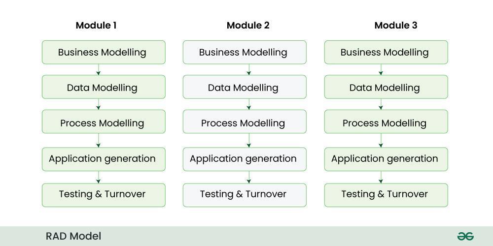

2.9 Rapid Application Development (RAD)
Rapid Application Development (RAD) emphasises speed through time-boxed delivery, heavy user involvement, and extensive use of CASE tools (Computer-Aided Software Engineering) for code generation, prototyping, and automated testing. RAD is not a single model but a philosophy that can use incremental or prototype approaches.

Key features
- Time-boxing. Each iteration has a fixed duration, and the team adjusts scope to fit the time-box rather than extending the deadline indefinitely.
- User involvement. Users take part in workshops (such as Joint Application Design sessions) throughout development, not only at the start and end.
- Prototyping. The team builds rapid user-interface and workflow prototypes so that requirements can be confirmed with real feedback.
- CASE tools. Computer-Aided Software Engineering tools support automated code generation from models, reusable components, and fourth-generation database environments.
- Small teams. RAD works best when skilled developers work in small groups that stay close to users and decision-makers.
Phases (typical RAD lifecycle)
- Requirements planning. The team runs a workshop to agree goals, scope, and constraints for the application.
- User design. Users and developers create prototypes together to validate screens and workflows.
- Construction. Developers implement the system quickly, often using CASE tools and generated code.
- Cutover. The team completes testing, data conversion, and go-live activities to put the system into production.
Advantages and disadvantages
- Advantages. RAD can achieve very fast delivery, high user satisfaction, and fewer misunderstandings because users stay involved throughout.
- Disadvantages. RAD needs committed users, skilled staff, and strong CASE support. It is not ideal for very large teams, and scalability or performance can suffer if the architecture is rushed.
Exam question — RAD
Q: Explain Rapid Application Development. What are its key features, and what are its limitations?
Model answer points:
- Define RAD as a fast development approach that combines time-boxing, continuous user involvement, prototyping, and CASE tools.
- Describe the four phases in order: requirements planning, user design, construction, and cutover.
- State advantages such as speed, user satisfaction, and fewer requirement errors.
- State limitations such as the need for active users, small skilled teams, limited suitability for very large systems, and dependence on tools.